In one paragraph. Green time at a junction is set from each approach's demand in Passenger Car Units (PCU). I fine-tuned YOLOv8s to detect 14 Indian vehicle classes on Bengaluru CCTV and turned its counts into PCU. The dataset has no camera ids and its official split leaks cameras, so I rebuilt the split around pseudo-cameras and evaluated on cameras the model never saw. An ablation then showed that the crowd-label merging method (majority vote or STAPLE) does not change what the detector learns.
The decision. At a signalised junction, green time is shared in proportion to the demand on each approach. Indian practice measures that demand in PCU (IRC:106-1990), because vehicles are not equal: a bus or truck counts about 3.3 cars, an auto-rickshaw 2 and a two-wheeler 0.75. Bengaluru already runs about 2,800 Safe City cameras; my system turns each camera frame into per-class vehicle counts and then into PCU per frame.
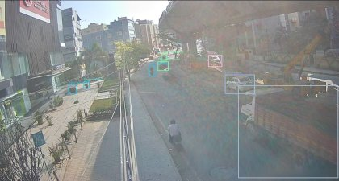
→| Two-wheeler | 6 × 0.75 |
| Car (5 classes) | 3 × 1.0 |
| Auto-rickshaw | 2 × 2.0 |
| Truck / bus | 1 × 3.28 |
| Source | UVH-26 (Sharma et al., 2025), released by IISc AIM with the Bengaluru Traffic Police. Licence CC BY 4.0; cited in the references. Downloaded in the notebook from the Hugging Face Hub, pinned to revision 59f82c5. |
| Size | 26,646 frames (1920 × 1080) from about 2,800 cameras, February 2025, 06:00–18:00; 14 classes (5 car types, two- and three-wheelers, bus, truck, LCV, mini-bus, tempo-traveller, bicycle, other). |
| Labels | Two crowd-consensus sets for the same frames: majority vote (MV) and STAPLE (ST). On the Hub, STAPLE covers only 81% of frames and repeats 429 boxes exactly in my pool; I removed the duplicates. |
| Used here | A seeded pool of 4,000 frames from the 21,726 that carry both label sets (3,201 official train, 799 official val), so both training runs see identical images: 48,932 MV and 51,780 ST boxes, resized to 1280 × 720. The full set is 90 GB; 4,000 frames let each training run finish in about 65 minutes inside one free Colab session, as the brief requires. |
The official split leaks across cameras. Each camera is fixed, so its frames share a near-identical background, but the camera ids were removed during anonymisation, and the official 80/20 split is random by image. I recovered pseudo-cameras by linking two frames when the correlation of their 64 × 36 gradient-magnitude thumbnails is g ≥ 0.48, then taking connected groups: 3,083 groups, the largest with 65 frames. Under this grouping, 247 of 799 official-val frames (30.9%) share a pseudo-camera with an official-train frame. That is a lower bound, because the link threshold favours precision; a looser direct test (g ≥ 0.36) puts it at 57.4%. A model scored on the official split is partly scored on cameras it trained on.
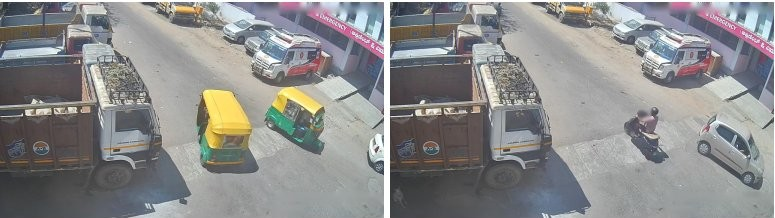
| My split (seed 87) | Frames | Pseudo-cams |
|---|---|---|
| Train | 3,071 | 2,318 |
| Val | 452 | 355 |
| Test, sealed by SHA-256 | 477 | 410 |
Whole pseudo-cameras were split 60/20/20. The seed was the best class balance of 50 seeds, judged on label counts only, before any training. A purge then moved into train any val or test pseudo-camera with a train frame at g ≥ 0.36, repeating until none was left (671 frames moved). A random audit of 40 test frames still found a same-camera train frame for 7: residual leakage ≈ 17.5% (95% CI 9–32%). Any stricter purge emptied the test set, because each test frame meets about 2,400 train frames and rare false matches add up. So I report the residual rather than claim zero. Every class appears in val and test, but Mini-bus (25), Tempo-traveller (28) and Others (3) have fewer than 30 STAPLE test boxes, so their AP is low-confidence.
| Choice (Ultralytics 8.4 values) | Invariance it asserts, and why |
|---|---|
| Resize to 1280 px (JPEG q95); train and test at 960 px | Vehicle class is recognisable at half of 1080p resolution. 960 px keeps distant two-wheelers visible while two runs still fit the GPU budget. |
| Horizontal flip, p = 0.5 | Vehicle type does not depend on left vs right. Flipping mirrors left-hand traffic: fine for type, wrong for lane direction, which I do not use. |
| No vertical flip, no rotation | A fixed CCTV camera is never upside down or tilted; these would teach views that never occur. |
| HSV jitter (h 0.015, s 0.7, v 0.4) | Class is invariant to daylight changes between 06:00 and 18:00, haze and colour casts. |
| Scale 0.5, translate 0.1, Mosaic (off for the last 10 epochs) | Class is invariant to distance from the camera and to position in the frame. Mosaic also shows more small vehicles per batch. |
YOLOv8s from COCO weights (YOLOv8 is on the course library list), 960 px, batch 8, seed 42, deterministic, MV labels, on a free Colab T4. COCO already knows cars, buses, trucks, motorcycles and bicycles. It has no class for three-wheelers, tempo-travellers or vans, and it has never seen elevated Indian CCTV viewpoints, so I fine-tuned rather than used it as-is.
| 5-epoch pilot, val | mAP@.50:.95 | mAP@.50 | min/epoch |
|---|---|---|---|
| Backbone frozen (freeze = 10) | 0.405 | 0.495 | 1.72 |
| All layers trained (chosen) | 0.433 | 0.519 | 1.87 |
I fixed the rule before the pilot: unfreeze the backbone only if it gains at least 0.02 mAP@0.50:0.95. It gained 0.028 for 9% more time per epoch, so nothing is frozen. New viewpoints and new classes need the backbone to adapt. Epochs: 34, the largest number that fits one 90-minute session with Mosaic epochs costed at their measured 1.35× data cost. The run took 65 minutes, and its best epoch was the last, so the model was still improving.
| mAP@0.50:0.95, MV labels | COCO as-is | Fine-tuned |
|---|---|---|
| All 9 shared coarse classes | 0.181 | 0.552 |
| 5 classes COCO can name | 0.326 | 0.663 |
| Two-wheeler (COCO “motorcycle”) | 0.120 | 0.707 |
| Three-wheeler (no COCO class) | 0.000 | 0.773 |
Generalisation. mAP@0.50:0.95 is 0.824 on train, 0.524 on val and 0.489 on test. The train–val gap is largest for the car subtypes (MUV 0.43, SUV 0.39, Van 0.51) and smallest for three-wheelers (0.10) and two-wheelers (0.12). Val tracks unseen-camera test within 0.035, so val was a fair guide for every choice.
Why this change. UVH-26 gives two consensus versions of the same crowd annotations, and they disagree: on the same 4,000 frames STAPLE has 6% more boxes (51,780 vs 48,932), split differently across the car subtypes. Anyone training on crowd labels faces this choice, so I asked whether the merging method changes what the detector learns. Exactly one thing changes: the training label set. A diff of the two checkpoints' stored training arguments shows a single differing setting, the data file. Both runs use the same image lists, seed, 34 epochs and configuration, and neither was resumed.
| mAP@0.50:0.95 | Val, MV labels | Val, STAPLE labels | Test, MV labels | Test, STAPLE labels (headline) |
|---|---|---|---|---|
| Trained on MV | 0.5245 | 0.4923 | 0.4892 | 0.4550 |
| Trained on STAPLE | 0.5131 | 0.4948 | 0.4750 | 0.4482 |
| STAPLE − MV (95% CI) | −0.011 (−0.030, +0.014) | +0.003 (−0.013, +0.024) | −0.014 (−0.035, +0.011) | −0.007 (−0.023, +0.008) |
Finding: the label-merging method does not measurably change what is learned. Every interval spans zero, and the two models' PCU errors are within 0.1 PCU of each other. The evaluation labels matter more: either model loses 0.02–0.03 mAP when scored against STAPLE rather than MV, so a UVH-26 benchmark number depends on which label set it was scored against. The STAPLE model trades precision for recall (against MV labels on val: recall 0.651 vs 0.554, precision 0.520 vs 0.692) without moving mAP. Only two classes move beyond noise on val, Hatchback (−0.039) and Two-wheeler (−0.012), out of 14 uncorrected comparisons.
Protocol. The checkpoint, epoch count, freeze choice and counting threshold were all fixed on val. I opened the test set once, after verifying its checksum; later notebook runs reload that saved evaluation rather than re-scoring. Track metrics: mAP at IoU 0.50 and averaged over 0.50:0.95, with a precision–recall curve, over the full confidence sweep (detections down to 0.001). Decision metric: PCU error per frame at the operating threshold.
From boxes to PCU. I keep one box per vehicle (its top class, with NMS across classes), because mAP-style evaluation lets one box carry several labels and would count a vehicle twice. On val I swept the confidence threshold from 0.05 to 0.70. The lowest mean absolute PCU error per frame is at confidence 0.35 for both models (MV model: 2.74 PCU per val frame, 14.8% of demand), and I froze it there. PCU factors follow IRC:106-1990, interpolating between its 5% and ≥ 10% traffic-share columns on the training traffic mix: two-wheeler 0.75, car 1.0, auto-rickshaw 2.0, LCV and tempo-traveller 1.54, truck, bus and mini-bus 3.28, bicycle 0.4, other 4.0.
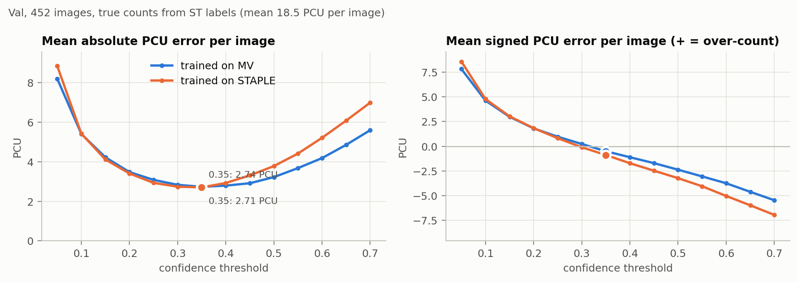
| Test, 477 frames | MV model | STAPLE model |
|---|---|---|
| mAP@0.50 (MV labels) | 0.571 | 0.555 |
| mAP@0.50:0.95 (MV labels) | 0.489 | 0.475 |
| mAP@0.50:0.95 (STAPLE labels) | 0.455 | 0.448 |
| PCU error per frame, mean |·| | 2.61 | 2.70 |
| … as a share of mean demand (16.5 PCU) | 15.8% | 16.4% |
| PCU bias per frame (− = under-count) | −0.93 | −1.25 |
| Vehicle-count error per frame | 1.75 | 1.81 |
PCU and count errors are measured against STAPLE labels at confidence 0.35. Against MV labels, the MV model's PCU error is 2.29 per frame with a bias of +0.20, so most of the under-count reflects STAPLE labelling more vehicles. Per-class test AP@0.50:0.95 (MV model, MV labels): three-wheeler 0.80, two-wheeler 0.73, bus 0.65, sedan 0.59, LCV 0.59, hatchback 0.58, truck 0.55, SUV 0.44, bicycle 0.43, MUV 0.39, van 0.35; low-confidence: tempo-traveller 0.48, mini-bus 0.26, others 0.01.
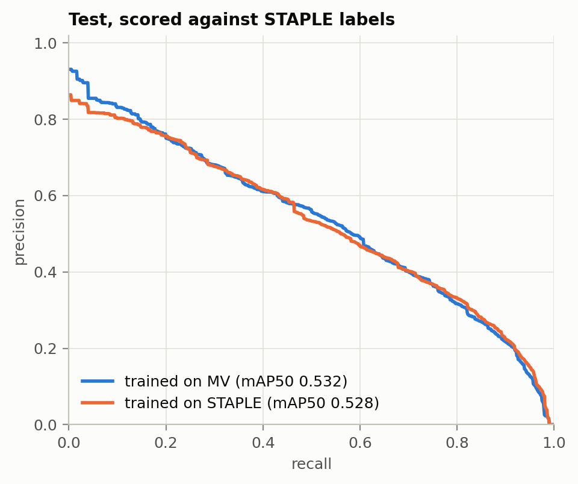
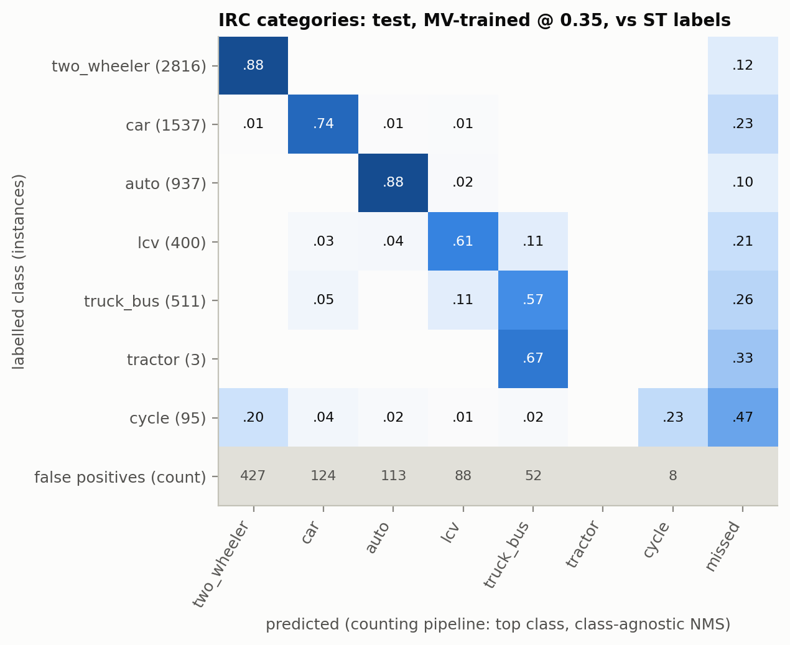
Two-wheelers and autos are counted in the right category 88% of the time, and cars 74%. What costs PCU: 26% of trucks and buses are missed and 11% are called LCVs (3.28 vs 1.54 PCU); bicycles are missed (47%) or called two-wheelers (20%). There are 427 two-wheeler predictions with no labelled vehicle, mostly parked or distant bikes. On the 14-class matrix the four car body types confuse each other heavily (29–57% on the diagonal), but that costs nothing in PCU, because every car class weighs 1.0.
I ranked test frames by absolute PCU error and by missed vehicles, took the 30 worst (24% of all absolute PCU error on test), drew every box coloured by outcome, and gave each frame one cause.
| Cause | Frames | Missed | |PCU| error | Net PCU |
|---|---|---|---|---|
| Dense occlusion | 11 | 95 | 103.3 (35%) | −95.5 |
| Small or distant | 7 | 53 | 66.2 (23%) | −38.8 |
| Cut off at frame edge | 5 | 30 | 51.2 (17%) | −32.1 |
| Fine-grained confusion | 3 | 14 | 32.3 (11%) | −12.7 |
| Other (parked vehicles, a crane) | 2 | 8 | 22.9 (8%) | +2.3 |
| Lighting (low sun, haze) | 1 | 5 | 9.1 (3%) | −9.1 |
| Label noise (bus labelled twice) | 1 | 7 | 8.0 (3%) | −8.0 |
What they have in common: occluded vehicles go uncounted, so demand is under-estimated. 24 of the 30 worst frames are under-counts. The largest group is vehicles hidden behind other vehicles: queues, rows of parked two-wheelers, and trucks or buses behind hoardings, flyover pillars and market umbrellas. A measure independent of my tags agrees: 139 of the 212 missed vehicles (66%) have more than 30% of their area covered by another labelled vehicle. Hidden heavy vehicles cost the most, at 3.28 PCU each, and one construction-site camera under a flyover supplies three of the 30 frames. Label disagreement explains little: only 12 of the 212 misses are vehicles that exist in the STAPLE labels but not in MV.
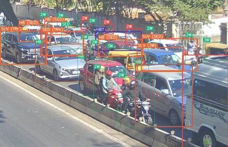
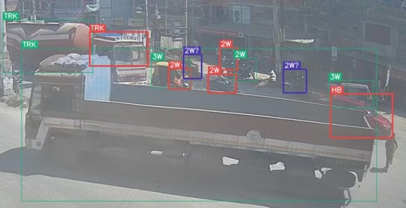
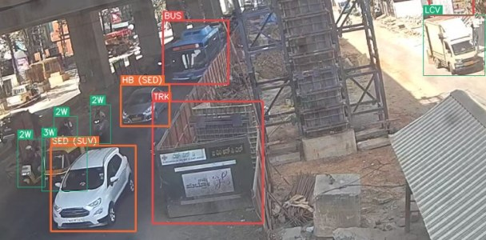
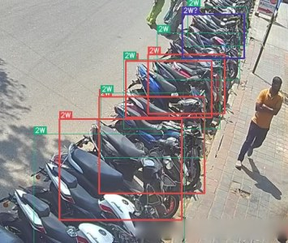
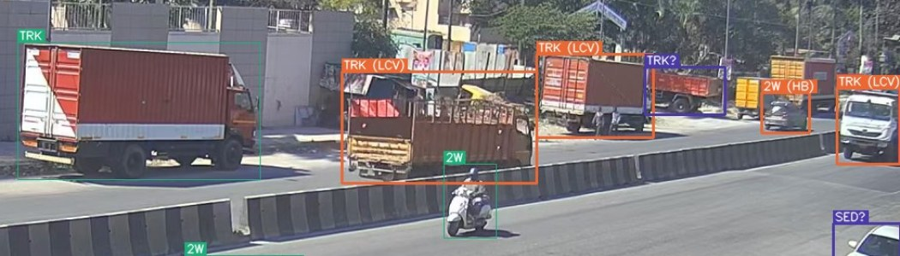
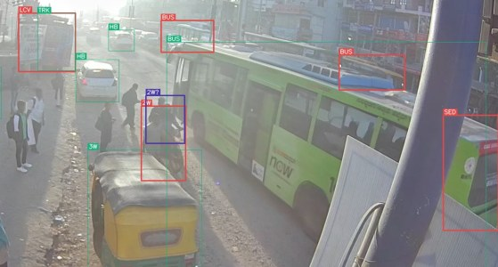
What I would deploy. YOLOv8s fine-tuned on majority-vote labels, counting one box per vehicle at confidence 0.35. On cameras it never saw, it reaches mAP@0.50:0.95 of 0.489 (MV labels) and estimates demand within 2.6 PCU per frame (15.8%), with a slight under-count. I prefer it to the STAPLE model because their accuracy is equal within noise and its PCU bias is smaller (−0.93 vs −1.25).
The number I refuse to promise: the demand of a dense queue. The worst frames are 10–16 PCU short, because occluded heavy vehicles are missed, and dense queues are exactly the approaches that most need green time. Green time set from these counts needs a density-dependent correction, or a safety margin, before it is trusted. I also do not promise per-class counts for the car subtypes or for mini-buses, tempo-travellers and “others”, or any performance at night, in rain or outside Bengaluru: the data is daytime February traffic in one city.
AI assistance. I used Claude (Anthropic) as a planning and review partner, and Claude Code to write the code in the repository and to draft this report from the notebook outputs. I ran the notebook on Colab, reviewed the 30 worst test frames and assigned their cause tags, and made the framing, design and analysis decisions, recording each in a decision log before seeing the result it affected.
References. A. Sharma, C. Mhatre, S. Gawali, R. Bokkasam, B. Kishore, V. Pattanaik, T. Rambha, A. R. Pinjari, V. Kovvali, A. Chakraborty, P. Rathore, R. Krishnapuram, Y. Simmhan. Towards Image Annotations and Accurate Vision Models for Indian Traffic, UVH-26-v1.0. Technical report, IISc, 2025, arXiv:2511.02563 (dataset, CC BY 4.0). · G. Jocher, A. Chaurasia, J. Qiu. Ultralytics YOLOv8, 2023. · A. Radford et al. Learning transferable visual models from natural language supervision (CLIP). ICML 2021. · S. K. Warfield, K. H. Zou, W. M. Wells. Simultaneous truth and performance level estimation (STAPLE). IEEE TMI 23(7), 2004. · Indian Roads Congress. IRC:106-1990, Guidelines for Capacity of Urban Roads in Plain Areas.